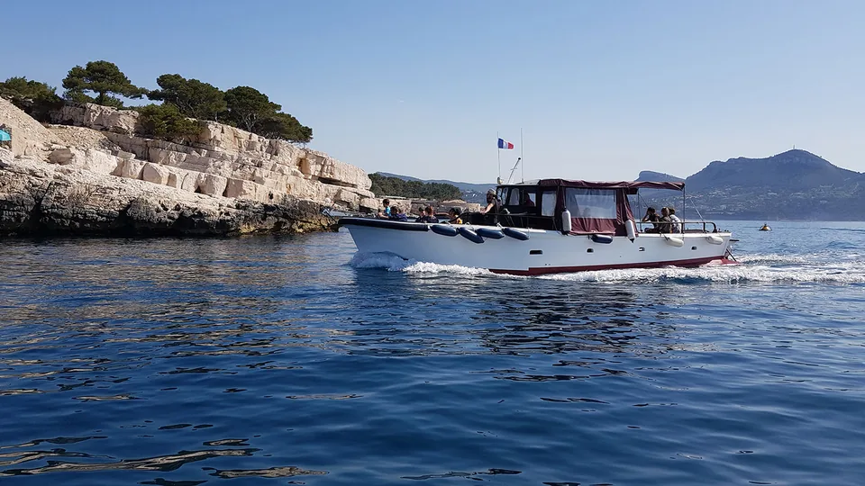
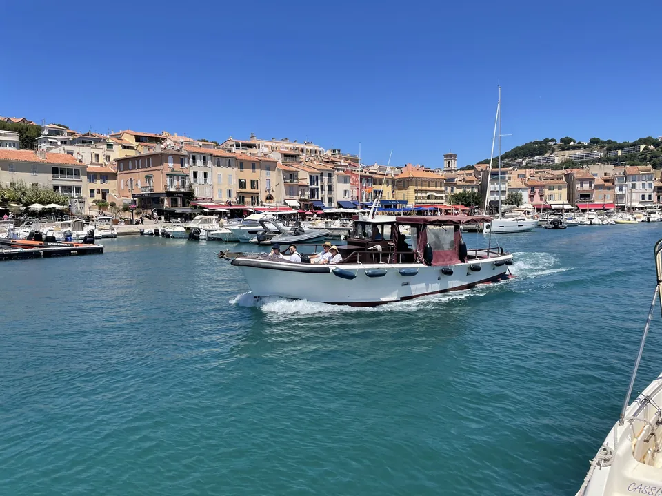
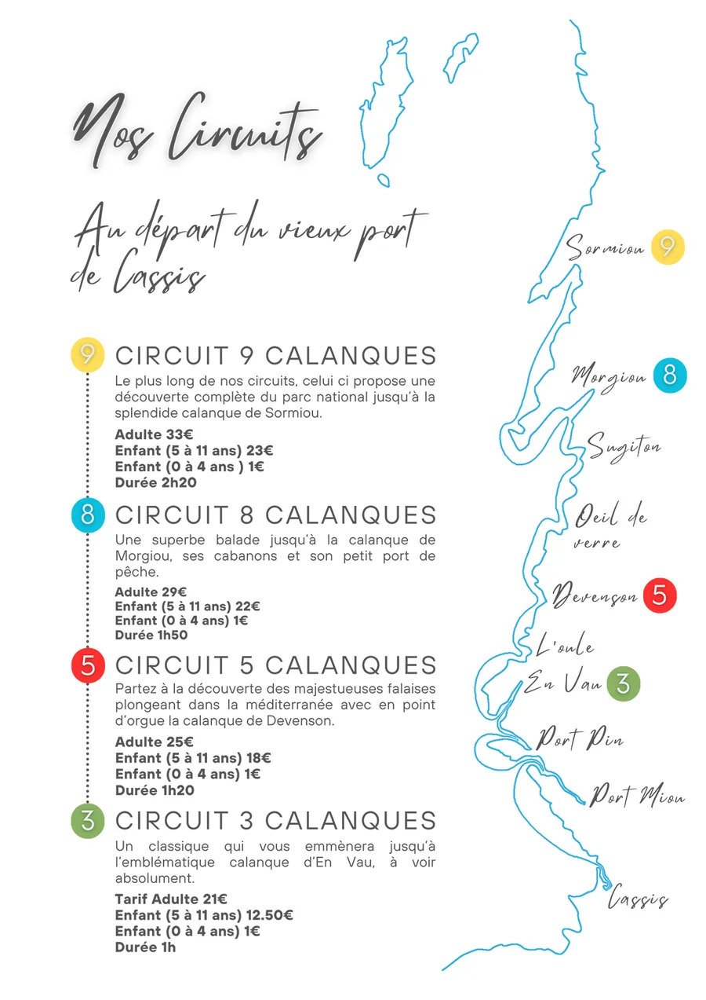
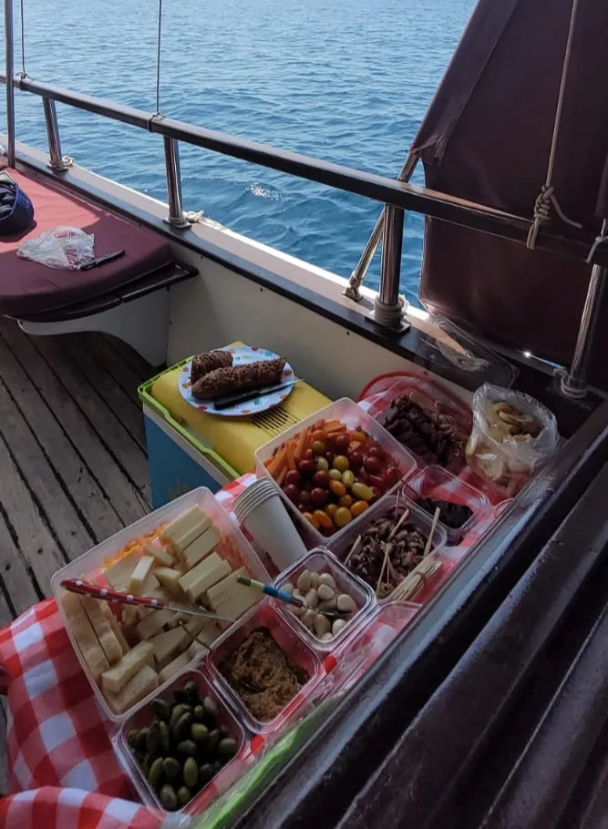
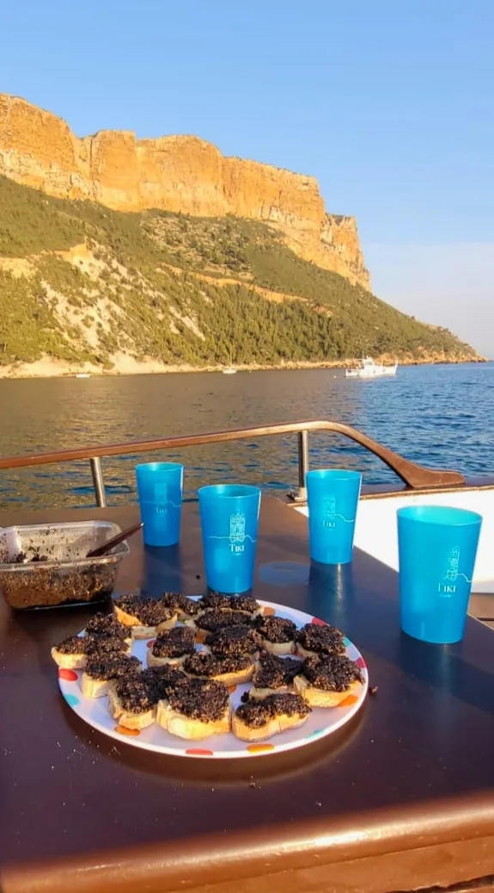
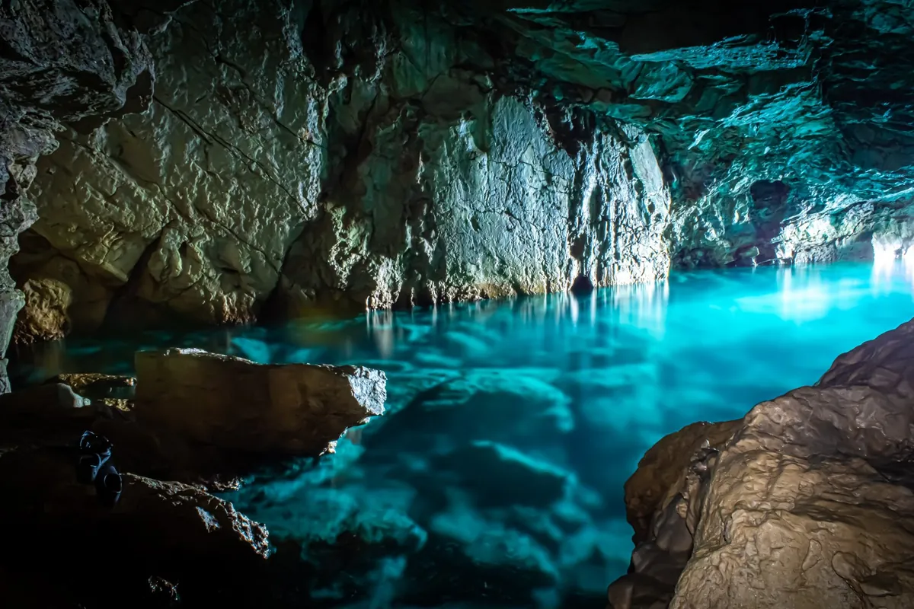
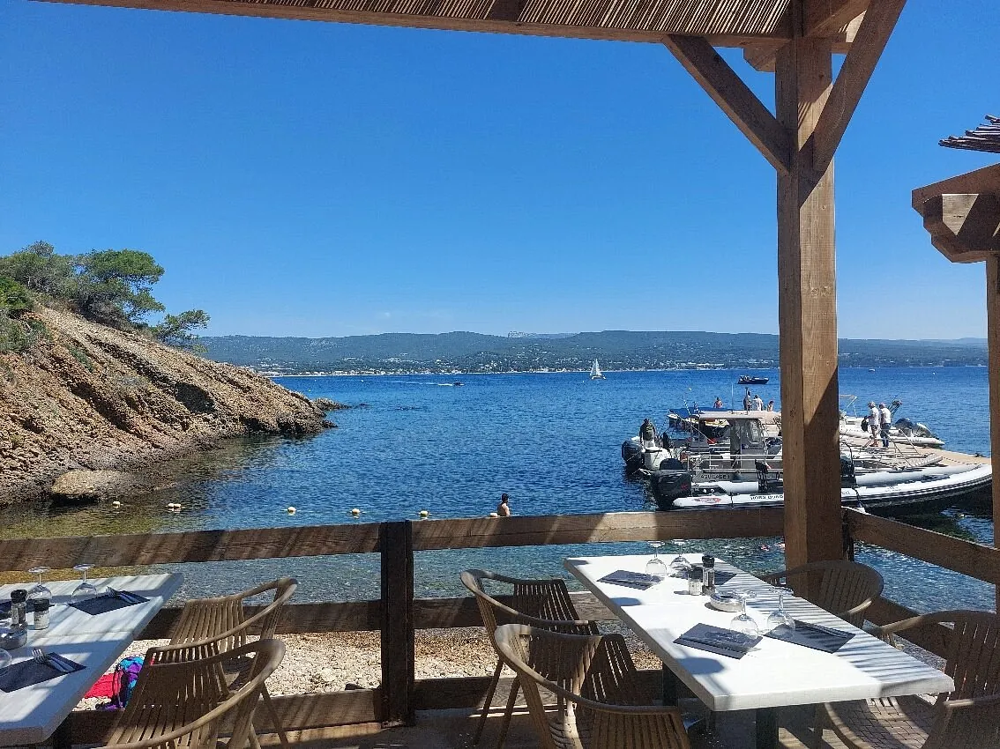
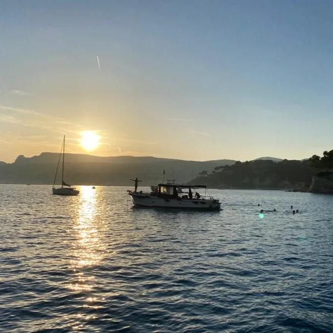

Ouvert toute l'année · 7 jours sur 7
Formules et tarifs
Privatisez le TIKI pour une heure ou une journée, embarquez pour une soirée d'été, ou admirez le feu d'artifice depuis la mer.
Composeur de sortie
Votre sortie, votre tarif
Privatisation en journée
Le bateau pour vous, de 1 h à 8 h
Programme à la carte, défini avec vous selon vos attentes et les conditions météo. Prix pour le bateau privatisé, jusqu'à 12 passagers.
Haute saison
De juin à septembre, plus les ponts, dimanches et jours fériés de mai.
Basse saison
D'octobre à mai.
Sans privatisation
Les circuits standards
Visite de 3 à 9 calanques, départs toute l'année, 7 jours sur 7, du Port de Cassis.
Les billets de ces circuits ne sont vendus que par le Groupement des Bateliers Cassidens, en ligne ou sur place, quai Saint-Pierre. L'achat d'un circuit standard ne garantit pas de monter à bord du TIKI : vous serez placés sur l'un des 15 bateaux du Groupement, dont le TIKI fait partie.


La brochure du Groupement, en PDF.
Ouvrir la brochure

Manger et boire à bord
Sur le TIKI comme chez vous
Apportez un pique-nique, un apéritif, commandez des pizzas ou un traiteur. Une grande glacière avec pains de glace garde tout au frais.
- Supermarchés à moins de 300 m : Petit Casino (avenue Victor Hugo, 30 m), Spar (10 rue de l'Arène, 170 m), U-tile (32 rue de l'Arène, 270 m).
- Pizzas et plats à emporter dans les restaurants du port, idéal pour une sortie vers midi.
- Boulangeries et traiteur : salades, sandwichs, quiches ; La Caille d'Or prépare des paniers pour le bateau.
- Le soir, un encas provençal est offert : boisson sans alcool et tapenade maison.
- Barbecue à bord (option 50 €) : le capitaine cuit, vous apportez. à confirmer avec le Parc national
Bon à savoir
Les conseils du capitaine
Quelle durée choisir ?
Comptez 1 h pour 3 calanques, 1 h 20 pour 5, 2 h 10 pour 8 et 3 h pour 9, sans arrêt. Ajoutez le temps de baignade ou de pause souhaité. Exemples : 2 h en journée pour 8 calanques, ou 3 calanques et 40 minutes de baignade sous le Cap Canaille ; 5 h pour les 9 calanques avec plusieurs arrêts ; 6 h pour l'île Verte avec déjeuner sur l'île.
Journée ou soirée ?
En journée, le soleil traverse l'eau et révèle le turquoise des calanques : c'est le meilleur moment pour la Grotte Bleue, mais aussi le plus fréquenté, et il peut faire très chaud en plein été. En soirée, la lumière est plus douce, la mer encore chaude, et l'heure dorée colore les falaises. Les soirées privatisées coûtent 100 € de moins que la journée en haute saison.
Et si la journée est classée rouge ?
Quand le risque d'incendie est très élevé, l'accès aux massifs du Parc national est interdit par la terre. La visite des calanques en bateau reste possible, mais tout débarquement est interdit : une sortie avec déjeuner sur l'île Verte peut alors être adaptée.
Et la météo ?
Le programme des sorties privatisées est défini avec le capitaine en fonction de vos attentes et des conditions météorologiques.
Conditions d'annulation à compléter
Nous sommes plus de 12
Le TIKI accueille 12 passagers au maximum. Le Groupement des Bateliers Cassidens réunit 15 bateaux de 12 à 75 places : le capitaine vous oriente vers un bateau partenaire.
Une autre activité nautique à Cassis ?
Les joutes provençales : de juin à septembre, les mercredis et samedis vers 18 h dans le port. À regarder depuis les quais ou à tester sur la tintaine, à 2 m au-dessus de l'eau. Participation de 10 € par personne pour soutenir l'association des Francs Jouteurs Cassidens.


Tout l'été
Une soirée à bord du TIKI

- Visite des calanques
- Baignade sous le Cap Canaille
- Encas provençal offert
- Coucher de soleil
Des températures plus douces, une eau toujours aussi chaude et de beaux couchers de soleil, selon l'heure.
Départ confirmé à partir de 8 personnes.
600 € pour 3 h.
Exemple de soirée privatisée de 3 h : visite de 5 calanques, apéritif offert sous le Cap Canaille, baignade, heure dorée et coucher de soleil.
Événements spéciaux
Le feu d'artifice depuis la mer
Pas envie d'être serrés sur la plage ? Réservez votre place aux premières loges : balade dans les calanques, arrêt apéro-détente, puis le feu d'artifice admiré depuis la mer.
Tarif : à compléter
Demander une placeDemande spéciale, question, réservation